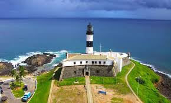
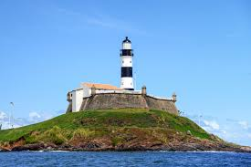
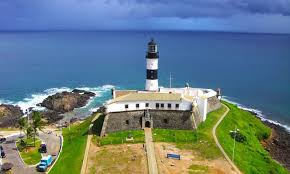
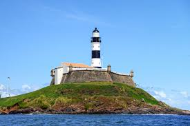

O Farol da Barra, ou Farol de Santo Antônio, localiza-se na antiga ponta do Padrão, atual Ponta de Santo Antônio, em Salvador, no litoral do estado da Bahia, no Brasil. Foi o primeiro sistema de sinalização náutica a entrar em operação nas Américas. Foi instalado no ano de 1698, inicialmente em formato quadrangular, com uma lanterna de bronze envidraçada no topo, alimentada por óleo de baleia. É o farol mais antigo das Américas ainda operante.
 


